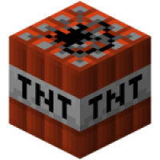

Apres avoir selectionner et presenter les extentions et le constructeur de page, j'ai commencer la création du site, avec l'aide de la chargé de communication et de mon maître de stage qui ete present en cas de besoin. Le developpement du site c'est fait en plusieur etape, planifier par l'ensemble de l'equipe.
Le parametrage des extentions de sécuriter fut la premiere etape. S'ensuit du parametrage de l'extention seo choisie. Dans ce cas la Yoast SEO. Vint ensuite le tour des pages du site. Les page prioritaire d'abord, puis les secondaires et les tertiaire a la fin. Lorsqu'une page été terminer, le referencement été fait. Cette methode nous a permis de pouvoir avancer sans probleme.
